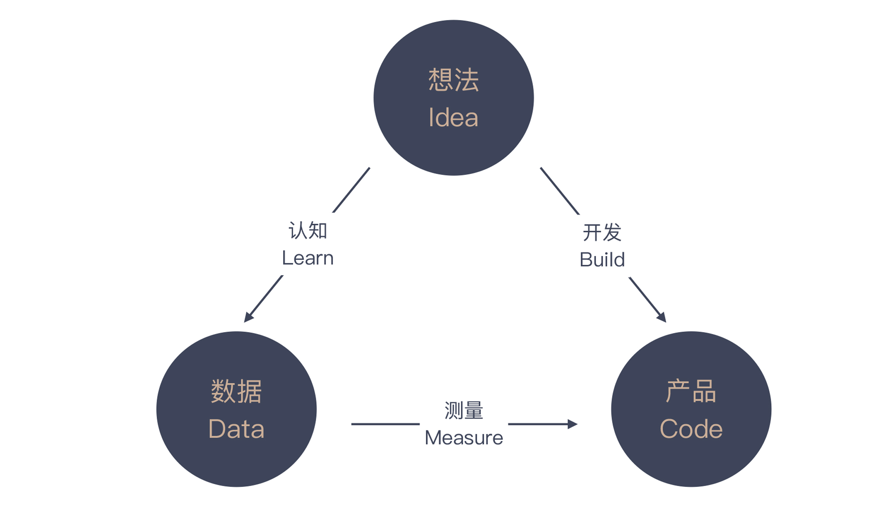

- 00 开篇词 程序员解决的问题，大多不是程序问题.md.html
- 01 10x程序员是如何思考的？.md.html
- 02 以终为始：如何让你的努力不白费？.md.html
- 03 DoD的价值：你完成了工作，为什么他们还不满意？.md.html
- 04 接到需求任务，你要先做哪件事？.md.html
- 05 持续集成：集成本身就是写代码的一个环节.md.html
- 06 精益创业：产品经理不靠谱，你该怎么办？.md.html
- 07 解决了很多技术问题，为什么你依然在“坑”里？.md.html
- 08 为什么说做事之前要先进行推演？.md.html
- 09 你的工作可以用数字衡量吗？.md.html
- 10 迭代0_ 启动开发之前，你应该准备什么？.md.html
- 11 向埃隆·马斯克学习任务分解.md.html
- 12 测试也是程序员的事吗？.md.html
- 13 先写测试，就是测试驱动开发吗？.md.html
- 14 大师级程序员的工作秘笈.md.html
- 15 一起练习：手把手带你分解任务.md.html
- 16 为什么你的测试不够好？.md.html
- 17 程序员也可以“砍”需求吗？.md.html
- 18 需求管理：太多人给你安排任务，怎么办？.md.html
- 19 如何用最小的代价做产品？.md.html
- 20 为什么世界和你的理解不一样？.md.html
- 21 你的代码为谁而写？.md.html
- 22 轻量级沟通：你总是在开会吗？.md.html
- 23 可视化：一种更为直观的沟通方式.md.html
- 24 快速反馈：为什么你们公司总是做不好持续集成？.md.html
- 25 开发中的问题一再出现，应该怎么办？.md.html
- 26 作为程序员，你也应该聆听用户声音.md.html
- 27 尽早暴露问题： 为什么被指责的总是你？.md.html
- 28 结构化：写文档也是一种学习方式.md.html
- 29 “懒惰”应该是所有程序员的骄傲.md.html
- 30 一个好的项目自动化应该是什么样子的？.md.html
- 31 程序员怎么学习运维知识？.md.html
- 32 持续交付：有持续集成就够了吗？.md.html
- 33 如何做好验收测试？.md.html
- 34 你的代码是怎么变混乱的？.md.html
- 35 总是在说MVC分层架构，但你真的理解分层吗？.md.html
- 36 为什么总有人觉得5万块钱可以做一个淘宝？.md.html
- 37 先做好DDD再谈微服务吧，那只是一种部署形式.md.html
- 38 新入职一家公司，怎么快速进入工作状态？.md.html
- 39 面对遗留系统，你应该这样做.md.html
- 40 我们应该如何保持竞争力？.md.html
- 划重点 “综合运用”主题内容的全盘回顾.md.html
- 划重点 “自动化”主题的重点内容回顾汇总.md.html
- 划重点 一次关于“沟通反馈”主题内容的复盘.md.html
- 划重点 关于“以终为始”，你要记住的9句话.md.html
- 划重点 关于“任务分解”，你要重点掌握哪些事？.md.html
- 加餐 你真的了解重构吗？.md.html
- 总复习 重新审视“最佳实践”.md.html
- 总复习 重新来“看书”.md.html
- 答疑解惑 如何分解一个你不了解的技术任务？.md.html
- 答疑解惑 如何在实际工作中推行新观念？.md.html
- 答疑解惑 如何管理你的上级？.md.html
- 答疑解惑 持续集成、持续交付，然后呢？.md.html
- 答疑解惑 持续集成，一条贯穿诸多实践的主线.md.html
- 结束语 少做事，才能更有效地工作.md.html
- 捐赠
06 精益创业：产品经理不靠谱，你该怎么办？
你好，我是郑晔。
前面谈到验收标准时，我们说的实际上是确定性需求，也就是说，我们已经知道了这个需求要怎么做，就差把它做出来了。而有时候，我们面对的需求却是不确定的，比如，产品经理有了一个新想法，那我们该如何应对呢？
今天，我们从 IT 行业一个极为经典的话题开始：程序员如何面对产品经理。我先给你讲一件发生在我身边的事。
有一次，我们一大群人在一个大会议室里做一个产品设计评审，来自产品团队和技术团队的很多人都参与到这个评审中。一个产品经理正对着自己的设计稿，给大家讲解一个新的产品特性。
这个公司准备将自己的服务变成了一个云服务，允许第三方厂商申请，这个产品经理给大家讲解的就是第三方厂商自行申报开通服务的流程。听完前面基本情况的介绍，我举手问了几个问题。
我：这个服务会有多少人用？- 产品经理：这是给第三方厂商的人用的。- 我：我问的是，这个服务会有多少人用。- 产品经理：每个第三方厂商的申请人都会用。- 我：好，那你有预期会有多少第三方厂商申请呢？- 产品经理：呃，这个……我们没仔细想过。- 我：那现在给第三方厂商开通服务的具体流程是什么。- 产品经理：第三方厂商申请，然后，我们这边开通。- 我：好，这个过程中，现在的难点在哪里？这个审批过程能让我们的工作简化下来吗？- 产品经理：……- 我：那我来告诉你，现在开通第三方厂商服务，最困难的部分是后续开通的部分，有需要配置服务信息的，有需要配置网络信息的。目前，这个部分还没有很好的自动化，前面审批的部分能够自动化，对整个环节优化的影响微乎其微。
我的问题问完了，开发团队的人似乎明白了什么，纷纷表示赞同我的观点。这个审批流程本身的产品设计并不是问题，但我们的时间和资源是有限的，关键在于，要不要在这个时间节点做这个事。准确地说，这是优先级的问题。
此刻，作为开发团队一员的你，或许会有种快感，把产品经理怼回去，简直大快人心。好吧，作为一个正经的专栏，我们并不打算激化产品经理和开发团队的矛盾，而是要探讨如何做事情才是合理的。
之所以我们能很好地回绝了产品经理不恰当的需求，是因为我们问了一些好问题，但更重要的是，我们为什么能问出这些问题。
产品经理是个新职业
在做进一步讨论之前，我们必须认清一个可悲的现状，IT 行业中大多数人的专业程度是不够的。
IT 行业是一个快速发展的行业，这个行业里有无数的机会，相对于其它行业来说，薪资水平也要高一些，这就驱使大量的人涌入到这个行业。
也因为这是一个快速发展的行业，很多职位都是新近才涌现出来的，比如，在2010年之前很少有专职的前端工程师，之前的工程师往往要前后端通吃。
产品经理便是随着创业浪潮才风起云涌的职位。既然这是个“新”职位，往往是没有什么行业标准可言的。所以，你会看到很多行业乱象：很多人想进入IT行业，一看程序员需要会写代码，觉得门槛高，那就从产品经理开始吧！这些人对产品经理岗位职责的理解是，告诉程序员做什么。
这和郭德纲口中外行人“如何认识相声”是一个道理，以为会说话就能说相声，殊不知，这是个门槛极高的行业。产品经理也一样，没有良好的逻辑性，怎么可能在这个行业中有好的发展。
如果你遇到的产品经理能给出一个自洽的逻辑，那么恭喜你，你遇到了还算不错的产品经理。多说一句，这个行业中专业度不够的程序员也有很多，人数比产品经理还多，道理很简单，因为程序员的数量比产品经理的数量多。
这么说并不是为了黑哪个职位，而是要告诉大家，我们必须要有自己的独立思考，多问几个为什么，尽可能减少掉到“坑”里之后再求救的次数。
回到前面的主题，我们该怎么与产品经理交流呢？答案还在这个部分的主题上，以终为始。我们是要做产品，那就需要倒着思考，这个产品会给谁用，在什么场景下怎么用呢？
这个问题在 IT 行业诞生之初并不是一个显学，因为最初的 IT 行业多是为企业服务的。企业开发的一个特点是，有人有特定的需求。在这种情况下，开发团队只要把需求分析清楚就可以动手做了，在这个阶段，团队中的一个关键角色是业务分析师。即便开发出来的软件并不那么好用，企业中强行推动，最终用户也就用了。
后来，面向个人的应用开始出现。在 PC 时代和早期的互联网时代，软件开发还基本围绕着专业用户的需求，大部分软件只要能解决问题，大家还是会想办法用起来的。
但是随着互联网深入人心，软件开始向各个领域蔓延。越来越多的人进入到 IT 行业，不同的人开始在各个方向上进行尝试。这时候，软件开发的主流由面向确定性问题，逐渐变成了面向不确定性问题。
IT 行业是这样一个有趣的行业，一旦一个问题变成通用问题，就有人尝试总结各种最佳实践，一旦最佳实践积累多了，就会形成一套新的方法论。敏捷开发的方法论就是如此诞生的，这次也不例外。
精益创业
最早成型的面向不确定性创造新事物的方法论是精益创业（Lean Startup），它是 Eric Ries 最早总结出来的。他在很多地方分享他的理念，不断提炼，最终在2011年写成一本同名的书：《精益创业》。
看到精益创业这个名字，大多数人会优先注意到“创业（Startup）”这个词。虽然这个名字里有“创业”二字，但它并不是指导人们创业挣大钱的方法论。正如前面所说，它要解决的是面向不确定性创造新事物。
只不过，创业领域是不确定性最强而且又需要创造新事物的一个领域，而只要是面向不确定性在解决问题，精益创业都是一个值得借鉴的方法论。比如，打造一个新的产品。
精益创业里的“精益”（Lean）是另外一个有趣的词。精益这个词来自精益生产，这是由丰田公司的大野耐一和新乡重夫发展出来的一套理论。
这个理论让人们开始理解价值创造与浪费之间的关系。创造价值是每个人都能理解的，但减少浪费却是很多人忽略的。所以，把这几个理念结合起来，精益创业就是在尽可能少浪费的前提下，面向不确定性创造新事物。
那精益创业到底说的是什么呢？其实很简单。我们不是要面向不确定性创造新事物吗？既然是不确定的，那你唯一能做的事情就是“试”。
怎么试呢？试就要有试的方法。精益创业的方法论里，提出“开发（build）-测量（measure）-认知（learn）”这样一个反馈循环。就是说，当你有了一个新的想法（idea）时，就把想法开发成产品（code）投入市场，然后，收集数据（data）获取反馈，看看前面的想法是不是靠谱。
得到的结果无非是两种：好想法继续加强，不靠谱的想法丢掉算了。不管是哪种结果，你都会产生新的想法，再进入到下一个循环里。在这个反馈循环中，你所获得的认知是最重要的，因为它是经过验证的。在精益创业中，这也是一个很重要的概念：经过验证的认知（Validated Learning）。

既然是试，既然是不确定这个想法的有效性，最好的办法就是以最低的成本试，达成同样一个目标，尽可能少做事。精益创业提出一个非常重要的概念，最小可行产品，也就是许多人口中的 MVP（Minimum Viable Product）。简言之，少花钱，多办事。
许多软件团队都会陷入一个非常典型的误区，不管什么需求都想做出来看看，殊不知，把软件完整地做出来是最大的浪费。
你为什么要学习精益创业？
或许你会问，我就是一个程序员，也不打算创业，学习精益创业对我来说有什么用呢？答案在于，精益创业提供给我们的是一个做产品的思考框架，我们能够接触到的大多数产品都可以放在这个框架内思考。
有了框架结构，我们的生活就简单了，当产品经理要做一个新产品或是产品的一个新特性，我们就可以用精益创业的这几个概念来检验一下产品经理是否想清楚了。
比如，你要做这个产品特性，你要验证的东西是什么呢？他要验证的目标是否有数据可以度量呢？要解决的这个问题是不是当前最重要的事情，是否还有其他更重要的问题呢？
如果上面的问题都得到肯定的答复，那么验证这个目标是否有更简单的解决方案，是不是一定要通过开发一个产品特性来实现呢？
有了这个基础，回到前面的案例中，我对产品经理提的问题，其实就是在确定这件事要不要做。事实上，他们当时是用一个表单工具在收集用户信息，也就是说，这件事有一个可用的替代方案。鉴于当时还有很多其它需求要完成。我建议把这个需求延后考虑。
总结时刻
程序员与产品经理的关系是 IT 行业一个经典的话题。许多程序员都会倾向于不问为什么就接受来自产品经理的需求，然后暗自憋气。
实际上，产品经理是一个新兴职业，即便在 IT 这个新兴行业来看，也算是新兴的。因为从前的 IT 行业更多的是面向确定性的问题，所以，需要更多的是分析。只有当面向不确定性工作时，产品经理才成为一个行业普遍存在的职业。所以，在当下，产品经理并不是一个有很好行业标准的职位。
比较早成型的面向不确定创造新事物的方法论是精益创业，它提出了“开发（build）-测量（measure）-认知（learn）”这样一个反馈循环和最小可行产品的概念。
当产品经理让我们做一个新的产品特性时，我们可以从精益创业这个实践上得到启发，向产品经理们问一些问题，帮助我们确定产品经理提出的需求确实是经过严格思考的。
如果今天的内容你只记住一件事，那请记住：默认所有需求都不做，直到弄清楚为什么要做这件事。
最后，我想请你回想一下，你和产品经理日常是怎样做交流的呢？欢迎在留言区写下你的想法。
感谢阅读，如果你觉得这篇文章对你有帮助的话，也欢迎把它分享给你的朋友。
© 2019 - 2023 Liangliang Lee. Powered by gin and hexo-theme-book.